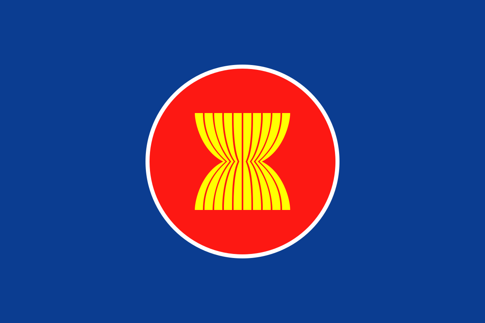
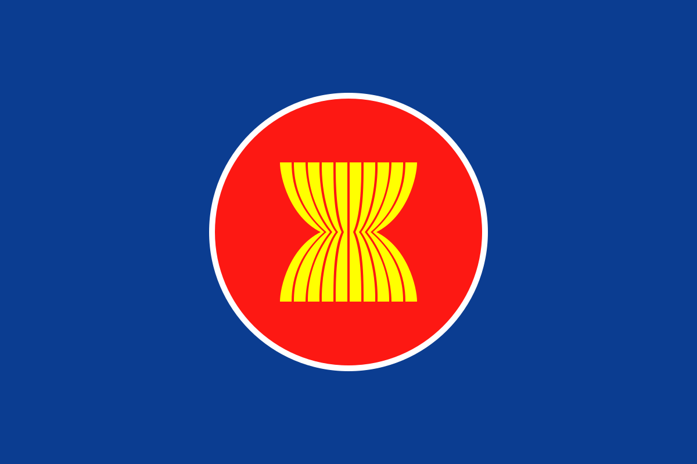

Kesimpulan
Kerja sama antara Indonesia dan Norwegia adalah contoh kolaborasi yang saling menguntungkan dan berfokus pada keberlanjutan. Melalui kemitraan ini, Indonesia dapat memanfaatkan teknologi maju dari Norwegia untuk meningkatkan kualitas dan daya saing produk perikanan serta mempercepat transisi ke energi terbarukan. Di sisi lain, Norwegia juga memperkuat komitmennya terhadap pengelolaan lingkungan global dan mendukung Indonesia dalam menjaga ekosistem tropisnya.
Selain itu, kerja sama ini juga memberikan dampak positif pada pengelolaan hutan dan perikanan yang berkelanjutan, yang pada gilirannya turut mendukung pencapaian SDGs, khususnya dalam hal pengurangan emisi karbon dan pelestarian keanekaragaman hayati. Oleh karena itu, kerja sama ini tidak hanya penting untuk kedua negara, tetapi juga bagi dunia dalam upaya bersama menghadapi tantangan perubahan iklim dan pembangunan berkelanjuta
Refleksi
Kerja sama antara Indonesia dan Norwegia menunjukkan bagaimana dua negara dengan latar belakang dan sumber daya yang berbeda dapat bekerja sama untuk mencapai tujuan global yang lebih besar. Fokus utama kerjasama ini adalah keberlanjutan, baik di sektor energi terbarukan, pengelolaan sumber daya alam, perikanan, maupun pelestarian lingkungan hidup. Dalam bidang ekonomi, Indonesia mendapatkan manfaat teknologi tinggi dari Norwegia, terutama dalam energi terbarukan dan sektor perikanan, yang tidak hanya membantu meningkatkan kualitas produk lokal tetapi juga memperluas peluang pasar internasional. Kerjasama ini juga memberikan dampak langsung terhadap kesejahteraan masyarakat Indonesia, khususnya mereka yang terlibat dalam sektor-sektor ini.
Dari sisi politik dan keamanan, kolaborasi dalam memerangi perubahan iklim dan pengelolaan sumber daya alam secara berkelanjutan memberikan contoh bagaimana dua negara dapat saling mendukung dalam forum internasional, seperti PBB, untuk mengatasi tantangan global. Selain itu, sektor pertahanan dan pengamanan perairan juga memperlihatkan pentingnya kerja sama dalam menjaga stabilitas regional dan internasional. Namun, refleksi ini juga menunjukkan bahwa untuk mencapai hasil yang optimal, perlu adanya komitmen jangka panjang dan evaluasi berkala terhadap implementasi program-program tersebut, agar dampaknya dapat dirasakan secara maksimal oleh masyarakat di tingkat lokal, nasional, dan global.